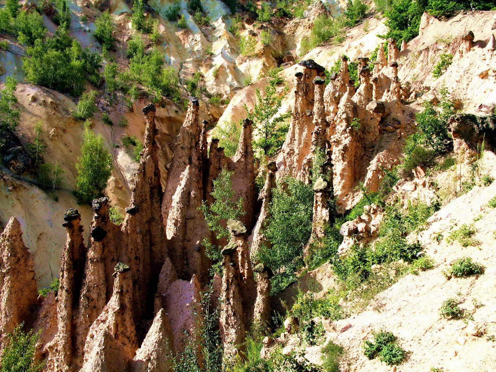
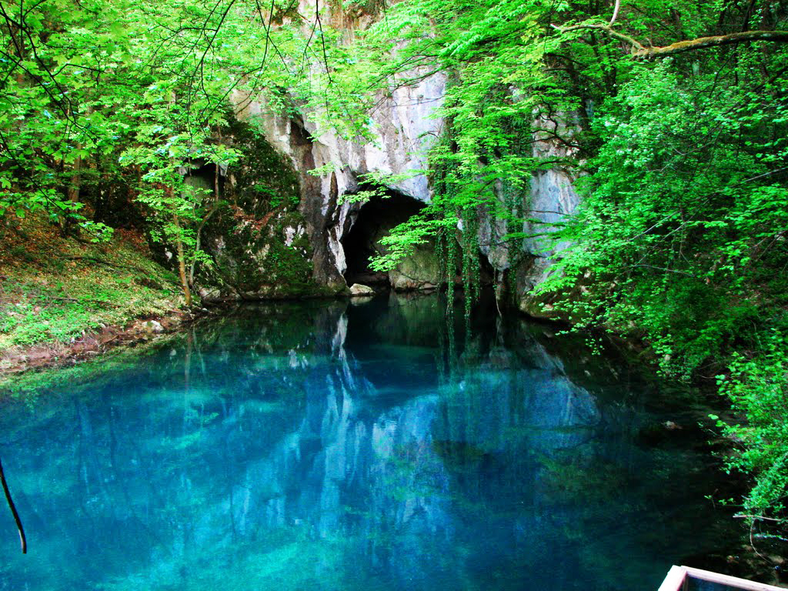
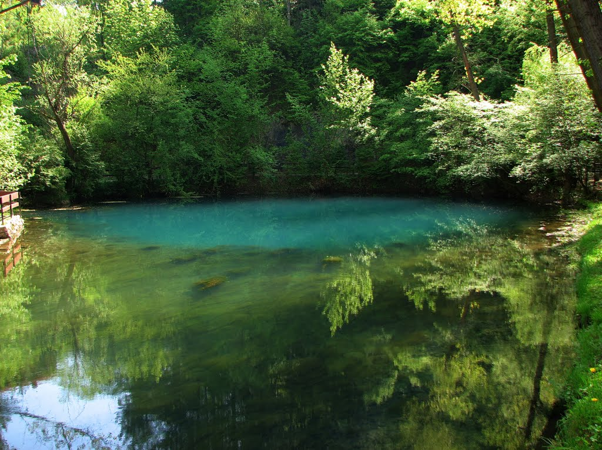
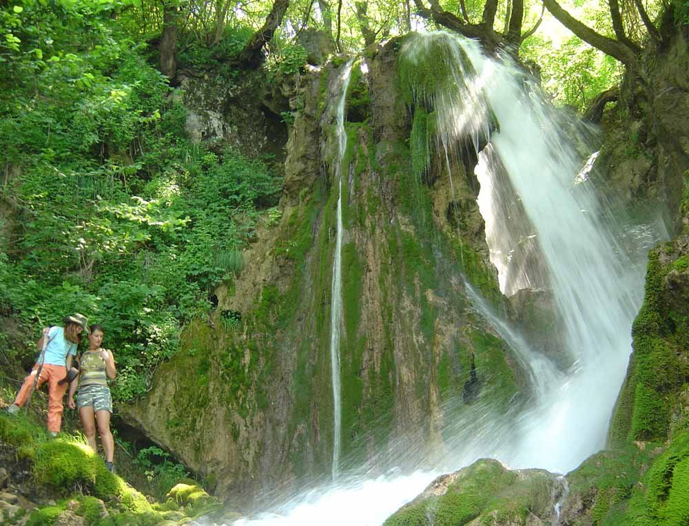
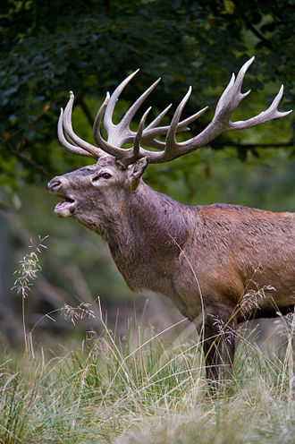

Životinje u Srbiji
Podela životinja

morka, ovce
divlja svinja
Turizam Srbije |
|||
|
Zahvaljujući brojnim pozitivnim razvojnim trendovima turistička delatnost se svrstala među najdinamičnije privredne grane, sa višestrukim multiplikativnim efektima (u periodu 1990 - 2000. godine međunarodni turistički promet povećan je za preko 50%, dok su ukupni prihodi uvećani za skoro 80%). To turizmu daje snažnu generatorsku funkciju u širokom spektru delatnosti, koji se sve više uključuje u prioritete privrednog razvoja brojnih receptivnih zemalja i njihovih pojedinih delova. Strategijom razvoja turizma u Srbiji utvrđen je selektivni pristup, pri čemu se seoski turizam tretira kao prioritetan u okviru onih vidova turizma koji su vezani za posebna interesovanja (naročito se potencira razvoj eko-turističkih sela na brdsko-planinskim područjima, koja nude zdravu sredinu, ekološku hranu, ugodan ambijent, aktivan odmor u prirodi, etnografske i druge kulturno-istorijske vrednosti). U dosadašnjem razvoju brdsko-planinskih sela dominantnu, a često i jedinu funkciju privređivanja imala je poljoprivreda (uglavnom stočarstvo i ratarstvo). Brojne druge delatnosti i aktivnosti domicilnog stanovništva, zasnovane na raznovrsnim i vrednim prirodnim i antropogenim lokalnim resursima, uglavnom su ostajale na marginama razvojnih događanja. Među njima je i turistička delatnost koji je važan faktor prosperitetnijeg razvoja ovih sela u Srbiji. |
|||
|  |  |  |  |
| Djavolja varoš | Krupajsko vrelo | Vrelo Mlave | Slapovi sopotnice |
Životinje u Srbiji |
|||
|---|---|---|---|
Podela životinja |
|||
| |
Domaće životinje |  | |
| Pas, mačka, hrčak | Divlje životinje | ||
| Kokoška, krava,
morka, ovce |
Vuk, jelen, srna,
divlja svinja |
||
| Konj | |||